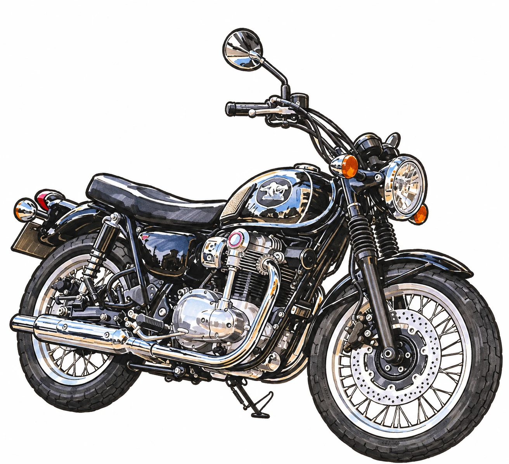
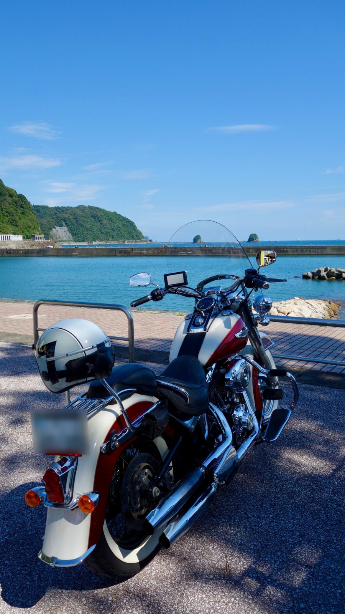

Honda
クロスカブ110
頼れる相棒
走行距離50,000kmを超えました。旅も日常生活も、この1台とともに。
- カラー
- マットアーマードグリーンメタリック
- 走行距離
- 50,000km超
バイク歴20年以上。あと何台の相棒に出会うことが出来るのか。まもなくお迎えするメグロK3に思いを馳せながら綴るクロスカブ110のある毎日。
2027年3月中旬の予定。それまではカブと一緒に、納車までの準備を記録します。
頼れる相棒
走行距離50,000kmを超えました。旅も日常生活も、この1台とともに。
歴史と伝統
知らないまま出会い衝撃をうける。「これに乗りたい」そう思い3年。いよいよ納車の時が迫る。。。
調子がいいとリッター70kmを超える優等生
歴史あるレトロバイクでどこまでも

ふらっと訪ねたカワサキプラザ。W800を見に行ったんです。実車を見ながら「いい雰囲気のバイクだな」と思っていると、「音、聞いてみますか？」
正直、そこまで気分は乗っていなくて遠慮しようかなと思いつつ、断りきれず外に出ることになり…
「これは、兄弟車みたいなもので音は同じなので〜」
僕はそれ以降の説明を聞いていませんでした。
目の前のバイクから目が離せませんでした。
レトロな雰囲気と重厚感。後に知ることになる銀鏡塗装の美しさ。そしてタンクに張り付いているロゴの美しさ、ワンポイントの赤色に、カタカナのメグロロゴ。その全てに一瞬で魅了されていました。
「こ、このバイクはなんていうバイクですかっ？？」
それが僕とメグロK3の初めての出会いです。
それから3年。
ただひたすらメグロK3を調べて追って、憧れて、迷走して、迷いつつも、また戻り。
年明けには契約を交わし、3月の納車を目指します。
どういった結末になるかはわかりませんが、良き相棒として僕の横にいる未来を目指し邁進しています。
旅の記録は準備中です。

29歳、ハーレーデビュー。きっかけはショッピングモールの展示会。一目惚れし、購入後大型免許取得へ。気品溢れる美術品。